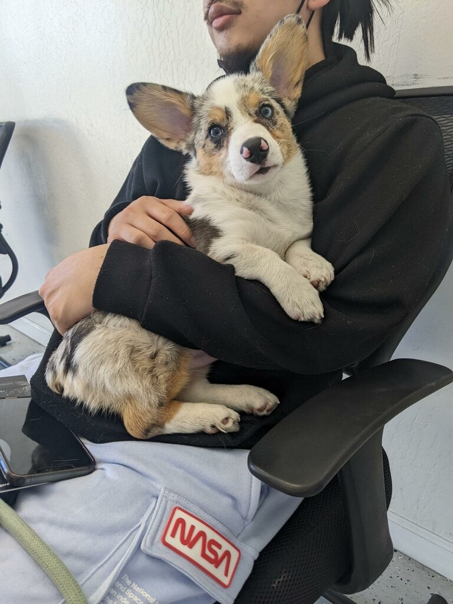

Hi, I'm Jordan Kwan! I reside in the Bay Area, in California. I have two wonderful pets, Yuda, my rambunctious little Corgi and Mocha, food monger Calico. I love to go bike riding and taking photos. I've lived here most of my life and love the weather and everything that it has to offer.
The highest level of education that I currently hold is an Associates Degree from Community College.